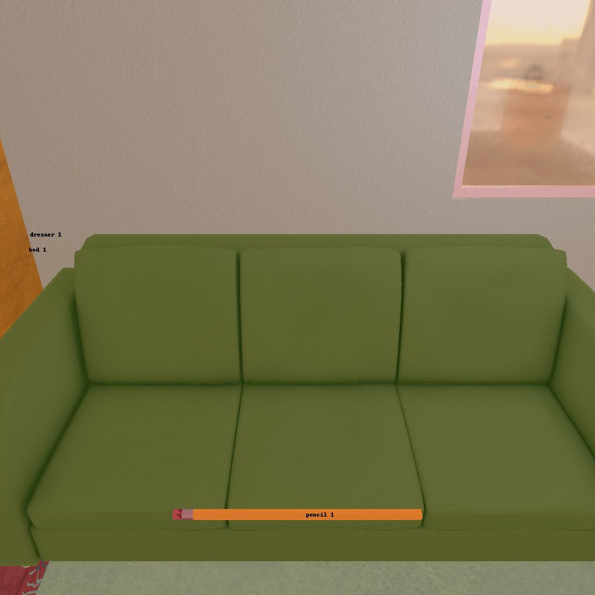
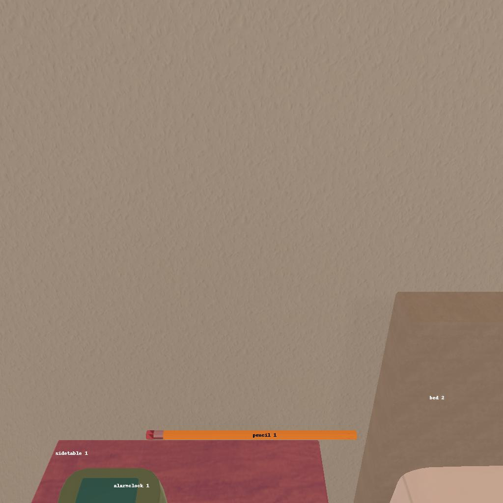

---------------------------------------------------------task: 2---------------------------------------------------------
--------------------------------------------------------------------------------------------------------------------------------------------------------------------
--------------------------------------------------------------------------------------------------------------------------------------------------------------------
Step:--------------------------------------------------------------------------4-------------------------------------------------------------------------------
----------------------------------------
VLM Prompt:
Image1:
Image2:
**Instruction**
1. Analyze the provided image to identify all visible household objects, focusing on those relevant to the task description "examine the pen with the desklamp."
2. Use the analysis of the image and the task hint "The agent must find an object of the desired type, locate and turn on a light source with the desired object in-hand." to answer the question: what is the most reasonable action in the choices for the task description "examine the pen with the desklamp"?
4. Decide and write the answer using the template: The answer is: (i): , where i is the real number. If there is no desired object in the image, search every place based on **Initial Observation** to find the object. And if no one is exactly correct, choose a similar answer.
**Initial Observation**
You are in the middle of a room. Looking quickly around you, you can see bed (1-2), dresser (1), drawer (1-11), sidetable (1-2), desk (1), garbagecan (1), safe (1)
**Answer Choices**
(1): go to dresser 1
(2): go to bed 2
(3): go to drawer 1
(4): go to drawer 2
(5): go to sidetable 2
(6): go to drawer 3
(7): go to drawer 4
(8): go to desk 1
(9): go to garbagecan 1
(10): go to drawer 5
(11): go to drawer 6
(12): go to drawer 7
(13): go to drawer 8
(14): go to drawer 9
(15): go to drawer 10
(16): go to drawer 11
(17): go to safe 1
(18): put pencil 1 in/on sidetable 1
(19): examine pencil 1
(20): examine sidetable 1
**Answer**
Let's think step by step by following the instructions.
----------------------------------------
----------------------------------------
Original Response:
First, we need to identify the objects of interest mentioned in the task description, which are a pen and a desklamp. In Image 1, we can see a pencil labeled as "pencil 1," which is the closest object to the mentioned pen. There is no desklamp visible in either of the images. However, we are instructed that the agent must find an object of the desired type (which is a pen, but in this case, a pencil will suffice) and then locate and turn on a light source with the desired object in hand.
Looking at the initial observation, we know that there are multiple drawers, a desk, and other pieces of furniture that could potentially have a desklamp. Since no desklamp is visible in the images, the most logical next step is to search for the desklamp in places it is likely to be found, such as on a desk or a sidetable.
The answer is: (8): go to desk 1
----------------------------------------
----------------------------------------
>>> Refine Original VLM Response and Get Pure Action: go to desk 1
----------------------------------------
-----------------------------------------------------------------
Running time: 10.609858751296997 seconds
Total Money: 0.7322500000000001
-----------------------------------------------------------------
-----------------------------------------------------------------
Text Observation:You arrive at loc 9. On the desk 1, you see a bowl 1, and a mug 1.
-----------------------------------------------------------------
UNSUCCEED